2. دليل Firebird
قبل تناول أساسيات لغة SQL، سنوضح للقارئ كيفية تثبيت نظام إدارة قواعد البيانات Firebird وكذلك العميل الرسومي IB-Expert.
2.1. أين يمكن العثور على Firebird؟
الموقع الإلكتروني الرئيسي لـ Firebird هو [http://firebird.sourceforge.net/]. توفر صفحة التنزيلات الروابط التالية (أبريل 2005):

ستقوم بتنزيل العناصر التالية:
نظام إدارة قواعد البيانات لـ Windows | |
مكتبة فئات لتطبيقات .NET تتيح الوصول إلى نظام إدارة قواعد البيانات دون استخدام برنامج تشغيل ODBC. | |
برنامج تشغيل Firebird ODBC |
قم بتثبيت هذه المكونات. يتم تثبيت نظام إدارة قواعد البيانات (DBMS) في مجلد يحتوي على محتويات مشابهة لما يلي:
 |
توجد الملفات الثنائية في المجلد [bin]:
 |
يتيح لك تشغيل/إيقاف نظام إدارة قواعد البيانات | |
عميل سطر الأوامر لإدارة قواعد البيانات |
لاحظ أنه بشكل افتراضي، يُسمى مسؤول نظام إدارة قواعد البيانات [SYSDBA] وكلمة المرور هي [masterkey]. تمت إضافة قوائم إلى [ابدأ]:

يتيح لك خيار [Firebird Guardian] تشغيل/إيقاف نظام إدارة قواعد البيانات. بعد التشغيل، يظل رمز نظام إدارة قواعد البيانات في شريط مهام Windows:
 |
لإنشاء قواعد بيانات Firebird وإدارتها باستخدام عميل سطر الأوامر [isql.exe]، يجب عليك قراءة الوثائق المرفقة مع المنتج في المجلد [doc].
2.2. وثائق Firebird
يمكن العثور على الوثائق الخاصة بـ Firebird ولغة SQL على موقع Firebird الإلكتروني (يناير 2006):

تتوفر أدلة متنوعة باللغة الإنجليزية:
للبدء في استخدام FB | |
لفهم رموز الأخطاء التي يعرضها FB |
كما تتوفر كتيبات تدريب على SQL:

لمعرفة كيفية إنشاء الجداول، وأنواع البيانات المتاحة، ... | |
الدليل المرجعي لتعلم لغة SQL باستخدام Firebird |
من الطرق السريعة للعمل مع Firebird وتعلم لغة SQL استخدام عميل رسومي. أحد هذه العملاء هو IB-Expert، الموصوف في القسم التالي.
2.3. العمل مع نظام إدارة قواعد البيانات Firebird باستخدام IB- Expert
الموقع الإلكتروني الرئيسي لـ IB-Expert هو [http://www.ibexpert.com/]. توفر صفحة التنزيلات الروابط التالية:

اختر الإصدار المجاني [Personal Edition]. بمجرد تنزيله وتثبيته، سيكون لديك مجلد مشابه لما يلي:

الملف القابل للتنفيذ هو [ibexpert.exe]. عادةً ما يتوفر اختصار في قائمة [Start]:
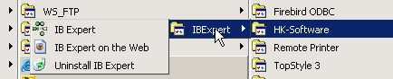
بمجرد تشغيله، يعرض IBExpert النافذة التالية:

استخدم خيار [ Database/Create Database] لإنشاء قاعدة بيانات:
يمكن أن يكون [محلي] أو [بعيد]. هنا، يقع الخادم الخاص بنا على نفس الجهاز الذي يعمل عليه [IBExpert]. لذلك نختار [محلي] | |
استخدم زر [folder] في القائمة المنسدلة لاختيار ملف قاعدة البيانات. يقوم Firebird بتخزين قاعدة البيانات بأكملها في ملف واحد. هذه إحدى مزاياه. يمكنك نقل قاعدة البيانات من جهاز كمبيوتر إلى آخر بمجرد نسخ الملف. تتم إضافة اللاحقة [.gdb] تلقائيًا. | |
SYSDBA هو المسؤول الافتراضي لتوزيعات Firebird الحالية | |
masterkey هي كلمة مرور المسؤول SYSDBA في إصدارات Firebird الحالية | |
لهجة SQL المراد استخدامها | |
إذا تم تحديد هذا المربع، فسيعرض IBExpert رابطًا إلى قاعدة البيانات بعد إنشائها |
إذا ظهرت لك الرسالة التالية عند النقر على زر [موافق] لإنشاء قاعدة البيانات:

فهذا يعني أنك لم تقم بتشغيل Firebird. قم بتشغيله. ستظهر نافذة جديدة:
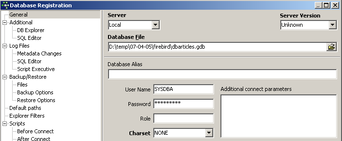
مجموعة الأحرف المراد استخدامها. على الرغم من أن لقطة الشاشة أعلاه لا تعرض أي معلومات، يُنصح باختيار مجموعة [ISO-8859-1] من القائمة المنسدلة، والتي تسمح باستخدام الأحرف اللاتينية المُشَدَّدة. |
يمكن لـ [IBExpert] التعامل مع أنظمة إدارة قواعد البيانات المختلفة المشتقة من Interbase. حدد إصدار Firebird الذي قمت بتثبيته: |
بمجرد تأكيد هذه النافذة الجديدة بالنقر فوق [تسجيل]، ستظهر النتيجة التالية:

للوصول إلى قاعدة البيانات التي أنشأتها، ما عليك سوى النقر مرتين على الرابط الخاص بها. سيقوم IBExpert بعد ذلك بعرض شجرة تتيح الوصول إلى خصائص قاعدة البيانات:
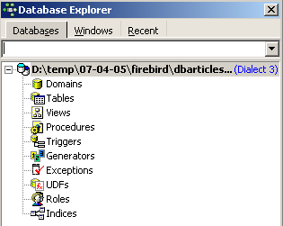
2.4. إنشاء جدول بيانات
لنقم بإنشاء جدول. انقر بزر الماوس الأيمن على [Tables] (انظر النافذة أعلاه) واختر خيار [New Table]. سيؤدي ذلك إلى فتح نافذة لتحديد خصائص الجدول:
 |
لنبدأ بتسمية الجدول [ARTICLES] باستخدام حقل الإدخال [1]:
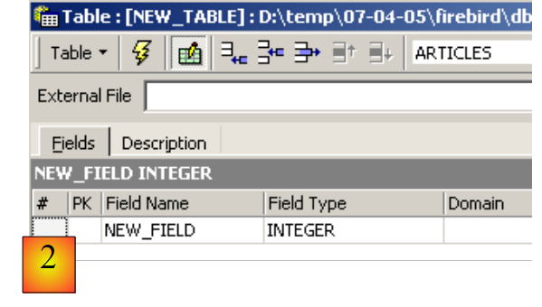 |
استخدم حقل الإدخال [2] لتعريف مفتاح أساسي [ID]:
 |
يتم تعيين الحقل كمفتاح أساسي بالنقر المزدوج على حقل [PK] (المفتاح الأساسي). دعونا نضيف حقولًا باستخدام الزر أعلاه [3]:

لن يتم إنشاء الجدول حتى ننتهي من "تجميع" تعريفنا. استخدم زر [Compile] أعلاه لإنهاء تعريف الجدول. يقوم IBExpert بإعداد استعلامات SQL لإنشاء الجدول ويطلب التأكيد:

ومن المثير للاهتمام أن IBExpert يعرض استعلامات SQL التي نفذها. وهذا يتيح لك تعلم لغة SQL وأي لهجة SQL خاصة قد يتم استخدامها. يقوم زر [Commit] بالتحقق من صحة المعاملة الحالية، بينما يقوم زر [Rollback] بإلغائها. هنا، نقبلها بالنقر على [Commit]. وبمجرد الانتهاء من ذلك، يضيف IBExpert الجدول الذي تم إنشاؤه إلى شجرة قاعدة البيانات لدينا:
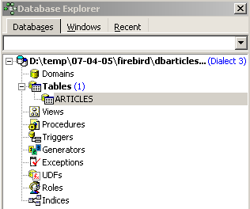
بالنقر المزدوج على الجدول، يمكننا الوصول إلى خصائصه:
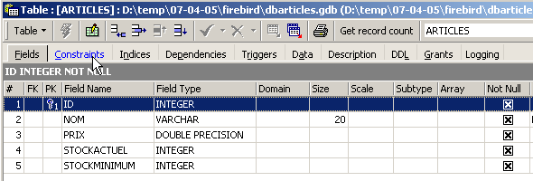
تسمح لنا لوحة [Constraints] بإضافة قيود تكامل جديدة إلى الجدول. لنفتحها:

نرى قيد المفتاح الأساسي الذي أنشأناه. يمكننا إضافة قيود أخرى:
- المفاتيح الخارجية [Foreign Keys]
- قيود سلامة الحقول [التحقق]
- قيود تفرد الحقول [Uniques]
دعونا نحدد ذلك:
- يجب أن تكون الحقول [ID، PRICE، CURRENTSTOCK، MINIMUMSTOCK] أكبر من 0
- يجب أن يكون حقل [NAME] غير فارغ وفريد
افتح لوحة [Checks] وانقر بزر الماوس الأيمن في منطقة تعريف القيد لإضافة قيد جديد:

دعونا نحدد القيود المطلوبة:

لاحظ أعلاه أن القيد [NAME<>''] يستخدم علامتي اقتباس مفردة، وليس علامتي اقتباس مزدوجة. قم بتجميع هذه القيود باستخدام الزر [Compile] أعلاه:

مرة أخرى، يثبت IBExpert سهولة استخدامه من خلال عرض استعلامات SQL التي نفذها. لننتقل الآن إلى لوحة [Constraints/Unique] لتحديد أن الاسم يجب أن يكون فريدًا. وهذا يعني أنه لا يمكن أن يظهر نفس الاسم مرتين في الجدول.

دعونا نحدد القيد:

ثم لنقوم بتجميعه. بمجرد الانتهاء من ذلك، افتح لوحة [DDL] (لغة تعريف البيانات) للجدول [ARTICLES]:

تعرض هذه اللوحة كود SQL لإنشاء الجدول مع جميع قيوده. يمكنك حفظ هذا الكود في نص برمجي لتشغيله لاحقًا:
SET SQL DIALECT 3;
SET NAMES NONE;
CREATE TABLE ARTICLES (
ID INTEGER NOT NULL,
NOM VARCHAR(20) NOT NULL,
PRIX DOUBLE PRECISION NOT NULL,
STOCKACTUEL INTEGER NOT NULL,
STOCKMINIMUM INTEGER NOT NULL
);
ALTER TABLE ARTICLES ADD CONSTRAINT CHK_ID check (ID>0);
ALTER TABLE ARTICLES ADD CONSTRAINT CHK_PRIX check (PRIX>0);
ALTER TABLE ARTICLES ADD CONSTRAINT CHK_STOCKACTUEL check (STOCKACTUEL>0);
ALTER TABLE ARTICLES ADD CONSTRAINT CHK_STOCKMINIMUM check (STOCKMINIMUM>0);
ALTER TABLE ARTICLES ADD CONSTRAINT CHK_NOM check (NOM<>'');
ALTER TABLE ARTICLES ADD CONSTRAINT UNQ_NOM UNIQUE (NOM);
ALTER TABLE ARTICLES ADD CONSTRAINT PK_ARTICLES PRIMARY KEY (ID);
2.5. إدخال البيانات في الجدول
حان الوقت الآن لإدخال البيانات في جدول [ARTICLES]. للقيام بذلك، استخدم لوحة [Data]:

يتم إدخال البيانات بالنقر المزدوج على حقول الإدخال في كل صف من الجدول. تتم إضافة صف جديد باستخدام الزر [+]، ويتم حذف صف باستخدام الزر [-]. يتم تنفيذ هذه العمليات ضمن معاملة يتم تثبيتها باستخدام زر [Commit Transaction] (انظر أعلاه). بدون هذا التثبيت، ستفقد البيانات.
2.6. محرر SQL [IB-Expert]
تسمح لغة SQL (لغة الاستعلام الهيكلية) للمستخدم بما يلي:
- إنشاء جداول عن طريق تحديد نوع البيانات التي ستخزنها والقيود التي يجب أن تفي بها البيانات
- إدراج البيانات فيها
- تعديل بيانات معينة
- حذف بيانات أخرى
- استخدام البيانات لاسترداد المعلومات
- ...
يتيح IBExpert للمستخدمين تنفيذ العمليات من 1 إلى 4 بشكل رسومي. لقد رأينا ذلك للتو. عندما تحتوي قاعدة البيانات على العديد من الجداول، يحتوي كل منها على مئات الصفوف، نحتاج إلى معلومات يصعب الحصول عليها بصريًا. لنفترض، على سبيل المثال، أن متجرًا عبر الإنترنت لديه آلاف العملاء شهريًا. يتم تسجيل جميع المشتريات في قاعدة بيانات. بعد ستة أشهر، تم اكتشاف أن المنتج "X" معيب. يريد المتجر الاتصال بكل من اشتراه حتى يتمكنوا من إرجاع المنتج لاستبداله مجانًا. كيف يمكن العثور على عناوين هؤلاء المشترين؟
- يمكنك تصفح جميع الجداول يدويًا والبحث عن هؤلاء المشترين. سيستغرق ذلك بضع ساعات.
- يمكننا تشغيل استعلام SQL يعرض قائمة بهؤلاء الأشخاص في غضون ثوانٍ
تكون لغة SQL مفيدة عندما
- تكون كمية البيانات في الجداول كبيرة
- عندما يكون هناك العديد من الجداول المرتبطة ببعضها
- عندما تكون المعلومات المطلوب استرجاعها موزعة عبر جداول متعددة
- ...
سنقدم الآن محرر SQL الخاص بـ IBExpert. يمكن الوصول إليه عبر خيار [أدوات/محرر SQL] أو بالضغط على [F12]:

يتيح لك هذا الوصول إلى محرر استعلامات SQL متقدم حيث يمكنك تشغيل الاستعلامات. دعنا نكتب استعلامًا:

قم بتنفيذ استعلام SQL باستخدام زر [Execute] أعلاه. ستحصل على النتيجة التالية:

أعلاه، تعرض علامة التبويب [Results] جدول النتائج لعبارة SQL [Select]. لإصدار أمر SQL جديد، ما عليك سوى العودة إلى علامة التبويب [Edit]. سترى بعد ذلك عبارة SQL التي تم تنفيذها.
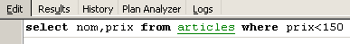
هناك عدة أزرار مفيدة على شريط الأدوات:
- يتيح لك زر [استعلام جديد] الانتقال إلى استعلام SQL جديد:

يؤدي هذا إلى ظهور صفحة تحرير فارغة:

يمكنك بعد ذلك كتابة عبارة SQL جديدة:

وتنفيذه:

لنعد إلى علامة التبويب [تحرير]. يتم تخزين عبارات SQL المختلفة التي تم إصدارها بواسطة [IB-xpert]. يتيح لك زر [الاستعلام السابق] العودة إلى عبارة SQL تم إصدارها مسبقًا:

ثم تعود إلى الاستعلام السابق:
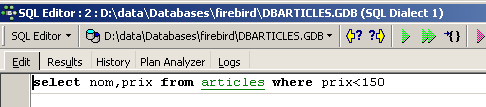
يتيح لك زر [الاستعلام التالي] الانتقال إلى جملة SQL التالية:
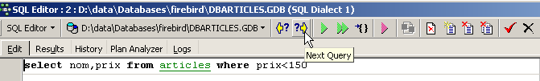
سترى بعد ذلك عبارة SQL التالية في قائمة عبارات SQL المخزنة:

يتيح لك زر [حذف الاستعلام] حذف عبارة SQL من قائمة العبارات المخزنة:

يقوم زر [Clear Current Query] بمسح محتويات المحرر الخاص باستعلام SQL المعروض:

يتيح لك زر [تثبيت] حفظ التغييرات التي تم إجراؤها على قاعدة البيانات بشكل دائم:

يتيح لك زر [RollBack] التراجع عن التغييرات التي تم إجراؤها على قاعدة البيانات منذ آخر عملية [Commit]. إذا لم يتم إجراء أي عملية [Commit] منذ الاتصال بقاعدة البيانات، فسيتم التراجع عن التغييرات التي تم إجراؤها منذ ذلك الاتصال.

لنلقِ نظرة على مثال. لنقم بإدراج صف جديد في الجدول:

يتم تنفيذ عبارة SQL ولكن لا يظهر أي شيء. لا نعرف ما إذا كان الإدراج قد تم أم لا. لمعرفة ذلك، دعونا ننفذ عبارة SQL التالية [استعلام جديد]:

نحصل على النتيجة التالية:

تم بالفعل إدراج الصف. دعونا نفحص محتويات الجدول بطريقة أخرى الآن. انقر نقرًا مزدوجًا على الجدول [ARTICLES] في مستكشف قاعدة البيانات:
نحصل على الجدول التالي:

يتيح لك الزر الذي يحتوي على السهم أعلاه تحديث الجدول. بعد التحديث، لا يتغير الجدول أعلاه. يبدو أن الصف الجديد لم يتم إدراجه. دعونا نعود إلى محرر SQL (F12) ثم ننفذ عبارة SQL باستخدام الزر [Commit]:

بمجرد الانتهاء من ذلك، دعونا نعود إلى جدول [ARTICLES]. يمكننا أن نرى أنه لم يتغير شيء، حتى عند استخدام زر [Refresh]:
أعلاه، افتح علامة التبويب [Fields]، ثم عد إلى علامة التبويب [Data]. هذه المرة، يظهر الصف الذي تم إدراجه بشكل صحيح:

عندما يبدأ تنفيذ عبارات SQL المختلفة، يفتح المحرر ما يسمى بمعاملة على قاعدة البيانات. لن تكون التغييرات التي أجرتها عبارات SQL هذه في محرر SQL مرئية إلا طالما بقيت في نفس محرر SQL (يمكنك فتح عدة نسخ). وكأن محرر SQL لا يعمل على قاعدة البيانات الفعلية بل على نسخة خاصة به. في الواقع، هذه ليست الطريقة التي يعمل بها بالضبط، لكن هذه المقارنة يمكن أن تساعدنا على فهم مفهوم المعاملة. لن تظهر جميع التغييرات التي تم إجراؤها على النسخة أثناء المعاملة في قاعدة البيانات الفعلية إلا بعد تثبيتها عبر [تثبيت المعاملة]. ثم يتم إنهاء المعاملة الحالية، وتبدأ معاملة جديدة.
يمكن التراجع عن التغييرات التي تم إجراؤها أثناء المعاملة من خلال عملية تسمى [Rollback]. دعونا نجرب التجربة التالية. لنبدأ معاملة جديدة (ببساطة [Commit] المعاملة الحالية) باستخدام عبارة SQL التالية:

دعونا ننفذ هذا الأمر، الذي يحذف جميع الصفوف من جدول [ARTICLES]، ثم ننفذ [New Query] باستخدام أمر SQL الجديد التالي:
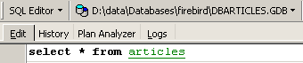
نحصل على النتيجة التالية:
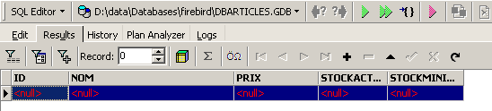
تم حذف جميع الصفوف. تذكر أن هذا تم على نسخة من جدول [ARTICLES]. للتحقق من ذلك، انقر نقرًا مزدوجًا على جدول [ARTICLES] أدناه:
واطلع على علامة التبويب [Data]:

حتى إذا استخدمنا زر [تحديث] أو انتقلنا إلى علامة التبويب [الحقول] ثم عدنا إلى علامة التبويب [البيانات]، فإن المحتوى أعلاه يظل دون تغيير. وقد تم شرح ذلك. نحن الآن في معاملة أخرى تعمل على نسختها الخاصة. والآن دعونا نعود إلى محرر SQL (F12) ونستخدم زر [التراجع] لإلغاء عمليات حذف الصفوف التي تمت:

يُطلب منا التأكيد:

دعونا نؤكد. يؤكد محرر SQL أن التغييرات قد تم التراجع عنها:
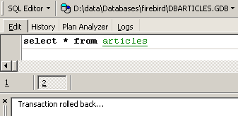
دعونا نُشغّل استعلام SQL أعلاه مرة أخرى للتحقق. عادت الآن الصفوف التي تم حذفها:

أعادت عملية [Rollback] النسخة التي يعمل عليها محرر SQL إلى الحالة التي كانت عليها في بداية المعاملة.